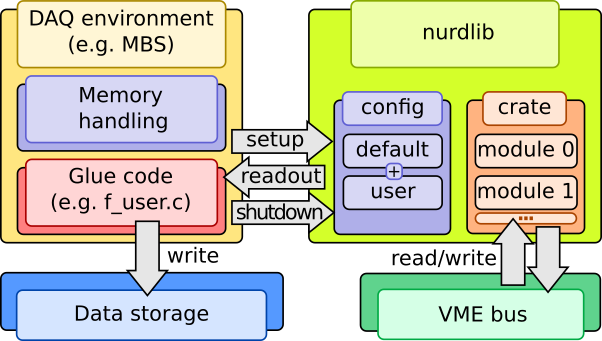

NUstar ReaDout LIBrary - nurdlib¶
A library for configuring, reading data from, and carefully checking data collection modules commonly used in nuclear physics experiments.
This document will start with simple examples, then cover common use cases and questions, and at last delve deeper into the inner workings of this library.
Acquire and build¶
git clone https://github.com/nustardaq/nurdlib.git
cd nurdlib
make -j8
make -j8 fuser_drasi
The above creates a debug build of the library, some binary tools, and an f-user (user readout binary) linked to drasi [1].
Examples¶
The nurdlib f-user opens nurdlib.cfg by default, so the following would go
to such a file:
CRATE("VME0") {
# TRIDI with TRLO II gateware.
GSI_TRIDI(0x03000000) {
# Read timestamps.
timestamp = true
}
# Caen TDC with default nurdlib settings.
CAEN_V775(0x00010000) {}
}
Run the drasi f-user:
./bin/m_read_meb.drasi \
--label=Test \
--triva=master \
--buf=size=100Mi \
--max-ev-size=0x1000 \
--subev=crate=0,type=10,subtype=1,control=1,procid=13 \
--server=trans \
--server=stream
This reads timestamps from a TRIDI on address 0x03000000, and a Caen v775 TDC on address 0x00010000, and both should have triggered once for every readout.
It is also possible to query and modify a running daq online:
# Dump the config:
./bin/nurdctrl -a localhost -D
# Print a simple crate & module tree.
./bin/nurdctrl -a localhost -s print
# Dump known registers of crate=0 module=1, i.e. in this example a V775.
./bin/nurdctrl -a localhost -s 0,1 -d
# Get firmware version of the V775 (refer to the manual).
./bin/nurdctrl -a localhost -s 0,1 -m 0x1000:16
# Set thresholds of channels 1 & 2.
./bin/nurdctrl -a localhost -s 0,1 -m 0x1080:16:0x100,0x1082:16:0x120
In case there is no running DAQ, one can talk to modules directly:
# Dump V775 registers.
./bin/rwdump -a 0x00010000 -t CAEN_V775 -d
# Read and write channel 0 threshold.
./bin/rwdump -a 0x00011080 -r16
./bin/rwdump -a 0x00011080 -w16,0x100
Introduction¶
nurdlib is an amalgamation of readout codes and experiences from many experiments mainly related to NUSTAR, but has been used also in other setups and facilities.
All this collected support can make nurdlib rather opaque and difficult to grasp fully, but it does offer a lot of error checking and recovery that is difficult to get right for a new DAQ.
The library aims to be as agnostic as possible to the DAQ backend, so the user will need to provide the “glue” code. nurdlib does know about MBS and drasi and ships with a minimal f-user which handles single-event readout.
For maximum performance and widespread compatibility, especially for old and limited systems, the code is written in ANSI C. Existing features should work “everywhere”, which for nurdlib is considered more important than how easy it is to quickly plug in new features.
Features¶
ASCII-based configuration of readout.
Sane (debatable) default configurations for modules.
Logging and debugging facilities.
Striving for DAQ framework and platform independence.
Module tagging for mixed module readout.
Online module integrity tests.
Online data integrity checking.
Single- and multi-event, and shadow readout.
Static and dynamic mapping of memory.
Single cycle and block transfer.
TRLO II [2].
Strict ANSI C compliance and harsh GCC flags.
Unit testing and gcov reporting.
Code unification and readability has high priority.
Mostly non-recursive GNU makefiles.
Command-line monitoring and configuration tool.
Command-line module access tool.
Support¶
Module support:
CAEN |
GSI |
Mesytec |
PNPI |
Struck |
Misc |
|---|---|---|---|---|---|
v560 |
ctdc |
madc32 |
cros3 |
3316 |
dummy |
v767a |
febex |
mqdc32 |
3801 |
||
v775 |
kilom |
mtdc32 |
3820 |
||
v785(n) |
mppc |
mdpp16 & 32 scp/qdc triggered/streaming |
3820 scaler |
||
v792 |
pexaria |
||||
v820 |
sam |
||||
v830 |
siderem |
vmmr8 |
|||
v895 |
tacquila |
||||
v965 |
tamex 2 & 3 |
||||
v1190 |
tridi TRLO II |
||||
v1290 |
triva |
||||
v1725 |
vetar |
||||
vftx2 |
|||||
vulom TRLO II |
|||||
vuprom TDC |
Controller support:
CAEN |
Mesytec |
CES RIO4 |
CES RIO2&3 |
|---|---|---|---|
VMELib |
MVLC (cmvlc) |
XPC 3.3 |
Has worked, not guaranteed |
XPC 2.6 |
|||
BMA |
Building¶
The nurdlib build system is based on non-recursive GNU makefiles, a custom
auto-configuration tool called nconf, and passing tests by ntest. All
generated files are placed inside nurdlib in a build directory:
nurdlib/build_<gcc machine>_<gcc version>_<build mode>
The build directory name is always printed when invoking make
successfully. The somewhat complicated name eliminates collisions between
several builds across platforms and build modes with the same source
directory.
One of the more interesting generated files is the static library
libnurdlib.a that contains everything for typical readout.
Testing and coverage¶
Unit testing is done with the custom ntest. The library won’t be built and
the binaries not linked unless the battery of unit tests pass.
Coverage analysis is done using the standard tool gcov. Testing works in
any build mode, but coverage is only available in one specific mode since it
requires instrumentation which reduces runtime performance significantly. With
the cov build mode the following targets are available:
make BUILD_MODE=cov test # Run tests.
make BUILD_MODE=cov cov # Coverage summary.
make BUILD_MODE=cov cov_files # Coverage summary per file (gcov -n).
make BUILD_MODE=cov cov_funcs # Coverage summary per function (gcov -fn).
make BUILD_MODE=cov cov_anno # Annotated source in build_*/cov/ (gcov -lp).
Release mode¶
When you are done debugging, build in release mode for meep-meep speeds:
make BUILD_MODE=release
CAEN VMElib¶
The CAEN controller support library CAENVMElib can be compiled against and
linked in a few ways. If it is installed system-wide, nconf should
automatically pick it up. Otherwise it’s also possible to link straight to a
local version:
make \
CPPFLAGS="-isystem <CAENVMElib-path>/include" \
LIBS=<CAENVMElib-path>/lib/<platform>/libCAENVME.so.<version>
or use the runtime linker:
cd <CAENVMElib-path>/lib/<platform>
ln -s libCAENVME.so.<version> libCAENVME.so
cd <nurdlib-path>
make \
CPPFLAGS="-isystem <CAENVMElib-path>/include" \
LDFLAGS="-L<CAENVMElib-path>/lib/<platform> \
-Wl,-rpath=<CAENVMElib-path>/lib/<platform>"
cmvlc¶
The Mesytec MVLC controller can be accessed in a few ways, but the recommended
way is via cmvlc [3]. Set the CMVLC_CONFIG make
variable and nconf should pick up the library:
make CMVLC_CONFIG=<cmvlc-path>/bin/cmvlc-config.sh
Utils¶
The utils typically have a help screen, which list alternative command line arguments.
nurdctrl¶
Inspect a running nurdlib:
./bin/nurdctrl -a localhost -D
./bin/nurdctrl -a localhost -sprint
./bin/nurdctrl -a localhost -s 0,2 -d
./bin/nurdctrl -a localhost -s 0,2 -m 0x02000000:32
Note that reading/writing from/to a module is really dangerous with a running DAQ! nurdlib does check the given addresses against known registers to referred modules to prevent mapping failures, but module logic can still be negatively impacted.
rwdump¶
Dump read/write module registers directly:
./bin/rwdump -a 0x02000000 -r 32
./bin/rwdump -a 0x02000000 -w 32,0xc4c4d0d0
./bin/rwdump -a 0x02000000 -t MESYTEC_MADC32 -d
wrslew¶
Latches and reads timestamps from a VETAR and a TRLO II module, and controls the slewing speed of the TRLO II module to follow the VETAR timestamp scale. This allows to sync e.g. ratatime and heimtime timestamp distribution against White Rabbit, although with offsets that is fixed w.r.t. cable lengths.
cat << EOF > slew.cfg
CRATE("slewer") {
GSI_TRIDI(0x02000000) {}
GSI_VETAR(0x50000000) {}
}
EOF
./bin/wrslew -c slew.cfg
memtest¶
Some modules support memory testing to verify their function. This program runs the module memory testing method infinitely.
Glue code example¶
#include <nurdlib.h>
struct Crate *g_crate;
struct CrateTag *g_tag;
void
backend_setup(void)
{
g_crate = nurdlib_setup(NULL, "nurdlib.cfg", NULL, NULL);
g_tag = crate_get_tag_by_name(g_crate, NULL);
}
void
backend_shutdown(void)
{
nurdlib_shutdown(&g_crate);
}
void
backend_readout(void *a_buf, size_t *a_buf_bytes)
{
struct EventBuffer eb;
uint32_t ret;
eb.ptr = a_buf;
eb.bytes = *a_buf_bytes;
crate_tag_counter_increase(g_crate, g_tag, 1);
ret = crate_readout_dt(g_crate);
if (0 != ret) log_error("crate_readout_dt failed with 0x%x.", ret);
ret = crate_readout(g_crate, &event_buffer);
if (0 != ret) log_error("crate_readout failed with 0x%x.", ret);
crate_readout_finalize(g_crate);
*a_buf_bytes -= eb.bytes;
}
Functions¶
Multi-event¶
In multi-event mode, the readout happens after any number of events between 1 and some number N. nurdlib must know the exact number in order to correctly compare event counters, and this is typically done with a scaler channel. Let’s say that the V775 trigger is copied to the 1st channel in a V830:
CRATE("Multi-event") {
TAGS("1") {
scaler_name = "my_scaler"
}
CAEN_V775(0x00020000) {}
TAGS("2")
CAEN_V830(0x00030000) {
SCALER("my_scaler") { channel = 0 }
}
}
Tag “1” will use the first channel of the V830 scaler module as its counter. The V830 is however expected to be latched in single-event mode together with tag “2”, which could be another trigger.
Exactly how a module type defines a scaler channel depends on its implementation. Below are the available options as of writing:
CAEN_V8{2,3}0:
SCALER(literal-string) { channel = 0..n }
GSI_{TRIDI,VULOM4,RFX1}:
SCALER(literal-string) { type = accept_pulse }
SCALER(literal-string) { type = accept_trig, channel = 0..15 }
SCALER(literal-string) { type = ecl, channel = 0..n }
SCALER(literal-string) { type = master_start }
SCALER(literal-string) { type = nim, channel = 0..n }
Control interface¶
While running, nurdlib can provide information on crate and module configuration and allow the user to talk to configured modules. This control interface is served by a UDP server inside the library. Since it does eat some resources it can be disabled.
In order to talk to this control server, use bin/nurdctrl. The help text
explains the available commands, but here are a examples:
./nurdctrl -c
This lists configured crates in the nurdlib running on localhost on the default port.
./nurdctrl -s print
Prints a simple graph view of the crate and modules, with indices used to refer to specific parts.
./nurdctrl -a192.168.0.100:10000 -s0,1 -d
This dumps the hardware registers in module 1 (zero-based indexing) in crate 0, with nurdlib running on the host 192.168.0.100 on port 10000.
To control the UDP server, set the global control_port config, which is
documented in cfg/default/global.cfg:
control_port = -1 # Use the default port.
control_port = 0 # Disable the server.
control_port = n # Use the given port.
Configuration parser¶
The config parser was written by hand to save memory for systems with limited resources, so there’s no handy list of grammar rules for the parsing. This section aims to explain most of the grammar.
top: item_list
item_list: item_list item
item: block OR config
block: block_header { item_list }
block_header: name OR name(block_param_list)
block_param_list: block_param_list block_param
block_param: scalar
config: name = value
value: scalar OR vector
vector: ( scalar_list )
scalar_list: scalar_list scalar
scalar: literal_string OR range OR value OR value unit
range: integer .. integer
value: integer OR double
unit: mV OR uV etc...
Environment variables¶
Many environment variables control the build process, but a few also control run-time behaviour.
Run-time variables¶
NURDLIB_DEF_PATH: Points to the directory where default configuration files reside. This variable will override the default../nurdlib/cfg/default/path.NTEST_COLOR: The tests output by ntest prints ANSI color escape codes by default. SettingNTEST_COLOR=0will disable these codes.NTEST_BAIL: Abort on first failed test.
The configuration files can also use environment variables when including files:
CRATE("MyCrate") {
include "$CFG_PATH/my_config.cfg"
}
Build variables¶
The typical compilation and linking flags are:
CPPFLAGS: Pre-compiler flags, such as -I and -D. These are prepended to the nurdlib pre-compiler flags so these can override search paths, e.g.-Iuser_header_path.CFLAGS: Compilation flags, such as -W. These are appended to the nurdlib compilation flags to override compilation switches, e.g.-Wno-crazy-warning.LDFLAGS: Linking flags, such as -L. These are prepended to the nurdlib linking flags to override search paths, e.g.-Luser_library_path.LIBS: Libraries, such as -l and direct paths to static and dynamic libraries. These are appended to the nurdlib libraries to cover for missing libraries, e.g.-luser_libraryor/path/userlib.so.1.2.3.
Build modes set with BUILD_MODE:
cov: Coverage compiled and linked in. This will insert instrumentation into the code and the final binaries will run much slower.gprof: -pg added to compilation and linking for profiling. This will run a bit slower.pic: Position independent code to build a shared object, necessary to build the Python online support.release: Optimized build.
Several programs can be overridden:
AR: Static linker.BISON: Bison-like parser generator.CCACHE: Ccache for fast recompilations.CPPCHECK: Static analysis tool for C code.FLEX: Lexical analyser generator for Bison input.INKSCAPE: To convert SVG to PNG for this documentation.LATEX: Latex to DVI converter.PYTHON: Python support for online communication .SED: GNU sed.SPHINX_BUILD: To build this documentation.
Drasi related:
DRASI_PATH: Path to drasi, where$DRASI_PATH/bin/drasi-config.shmust exist.
TRLO II related:
TRLOII_PATH: Path to TRLO II directory.{TRIDI,VULOM4,RFX1}_FW: By default, nurdlib chooses TRLO II firmware versions by looking at the directories$TRLOII_PATH/trloctrl/fw_\*_\*/, but this decision can be overridden with these env-vars.
Mesytec MVLC related:
CMVLC_CONFIG: Path to cmvlc_config.sh.
Build system¶
Early versions of nurdlib supported CES RIO2 systems with very old versions of GNU make. This platform has not been tested in a long time, but the makefiles probably support rather old versions of make.
The master makefile in the project root directory includes rules.mk files in sub-directories. This way all dependencies and references end up in the same space and can produce a more complete build graph.
Early in the build process, an MD5 sum is calculated from source files
which have an impact on the online communication. The sum stored in the
library and the client must match at runtime to be sure that the data handling
in the readout and client processes are compatible.
Auto-configuration of flags and libraries is done by nconf. This step is
performed early in the build, following the usual make dependency rules.
If you would like to build only a sub-set of all available module types, you can specify them in this file. There is a list of modules near the top of the main makefile which can be copied and modified.
echo "MODULE_LIST=caen_v775" > local.mk
Note that some modules depend on other modules and there is no guard on such dependencies, it is completely manual!
nconf¶
Auto-configuring is tricky business, since different features may require different versions of system files. For example, extension functions may exist in different versions of POSIX on one platform, but with a mix of POSIX and BSD support on another.
nurdlib tries to reduce these troubles in two ways: not exposing extension
functions outside of one file, and nconf.
A simple example of the first is the inconspicuous strdup function.
nurdlib defines this as an error and instead pushes for the built-in
strdup_ (see util/string.h). It’s a bit of a faff, but avoids issues
with compiling the same code on the many platforms that nurdlib has been
ported to.
nconf takes care of the rest. It scans through a file looking for
if NCONF_m<module>_b<branch>, groups all switches with the same
module, tries to build, link, and execute a test program for every
branch, and whichever branch succeeds first within a module is chosen.
The following output files are written:
# Used by nconf during testing:
build_*/nconfing/nconf/<source> # Module/branch macros.
build_*/nconfing/nconf/<source>.bin # Linked file.
build_*/nconfing/nconf/<source>.c # Main code.
build_*/nconfing/nconf/<source>.o # Compiled code.
# Final output:
build_*/nconf/<source> # Module/branch macros.
build_*/nconf/<source>.args # Accumulating compiler flags.
build_*/nconf/<source>.log # Tests log.
build_*/nconf.args # Accumulated compiler flags.
To use the results of another project in your own code, for example to use nurdlib decisions in your own DAQ build:
NCONF_ARGS = $(NURDLIB_PATH)/$(BUILD_DIR)/nconf.args
include $(NURDLIB_PATH)/nconf/nconf.mk
If you then access the four variables NCONF_CPPFLAGS, NCONF_CFLAGS,
NCONF_LDFLAGS, NCONF_LIBS, you will get the flags that were chosen in
the nurdlib build process.
If you’d like to use nconf yourself, first:
NCONF_H = all files to be nconfed, header or source files
NCONF_ARGS = $(BUILD_DIR)/nconf.args
NCONF_PREV = $(NURDLIB_PATH)/$(BUILD_DIR)/nconf.args
include $(NURDLIB_PATH)/nconf/nconf.mk
object: source $(NCONF_ARGS)
This will create files in $(BUILD_DIR)/nconf\* as listed above.
ntest¶
nurdlib has a rigorous set of unit tests to verify a large fraction of the code. New features and critical bugs should be accompanied by testing code. This way, new code should not break existing tested code, and old bugs should be detected to the extent of the tests, just the typical testing approach. Note that this testing only applies to internal logic and utilities, and can not test hardware or external user implementations!
make test
mocking¶
The mock directory contains library stubs, such as for mapping or driver
interfaces. This comes with some great advantages:
Every module can be built on every platform to make sure there is as little guarded code as possible.
Different combinations of enabled/disabled features can be tested.
Modern platforms may have compilers with better static checking than old platforms which helps maintenance of as many code paths as possible.
cd <nurdlib-path>/mock
make
Don’t pass -j since it will make the output very ugly between all the
builds! Instead run e.g. make RUNNER_MAKE_J=-j16 for 16 concurrent jobs
per mocked build. This takes quite long, so don’t run it on slow hosts.
Guidelines¶
nurdlib aims to follow certain guidelines to be safe and somewhat maintainable:
Monotonic counters: Any progressing value is not reset, unless the hardware enforces it. Software counters are absolute, and progression is calculated as differences. This approach carries more information than resetting values.
Resource freeing: Always follows a certain pattern, which makes sure that pointers cannot escape:
void myobj_free(struct MyObject **a_obj) {
struct MyObject *obj = *a_obj;
if (obj) {
...
FREE(*a_obj);
}
}
Goto is not completely evil: Liberal use can make code difficult to follow, but is used for a lot of error handling in larger functions:
void func(void) {
if (!cond) goto fail;
return success;
fail:
log_die(LOGL, "Well, crap.");
}
OpenBSD KNF-like style: There are many exceptions to this style, but indentation, not typedef-ing struct’s, snake-case variables are some of the most important.
People¶
Haik Simon, Håkan T. Johansson, Alexandre Charpy, Bastian Löher, Michael Munch, Oliver Papst, Stephane Pietri, Hans Törnqvist.
References¶
GSI Scientific report 2014: MU-NUSTAR-NR-08.pdf.
[1] drasi: http://fy.chalmers.se/~f96hajo/drasi/doc/
[2] TRLO II: https://fy.chalmers.se/~f96hajo/trloii/
[3] cmvlc: https://git.chalmers.se/expsubphys/cmvlc